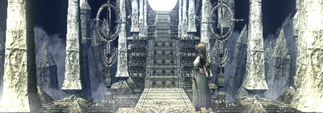
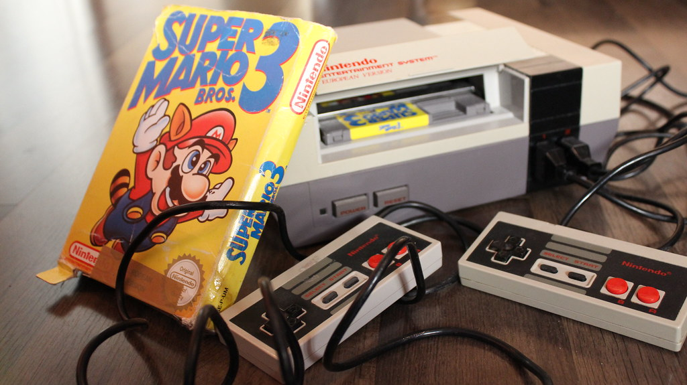
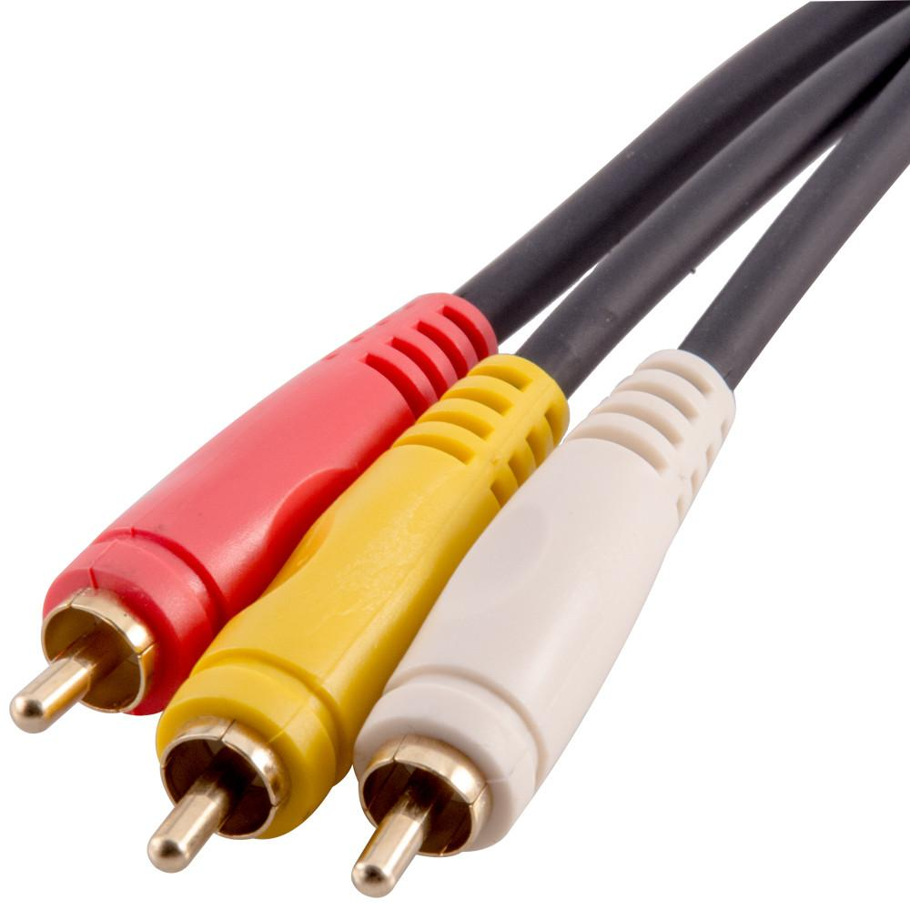
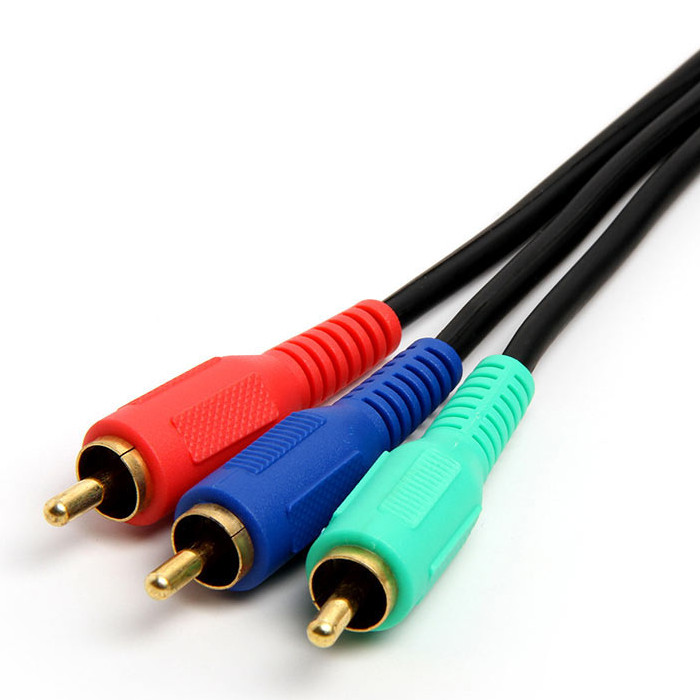
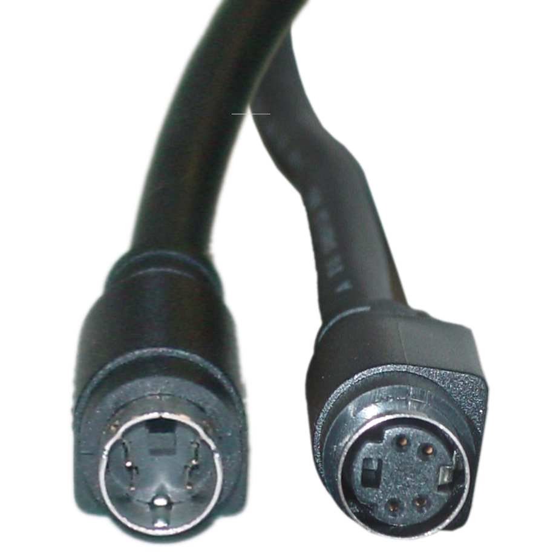

DisplayStation
Cables
What video outputs your console supports.
Retro video game consoles have become more mainstream in recent years due to the cheaper nature of the second hand market and people's hoarding habits leaving old consoles tucked away in various hiding places. The biggest obstacle usually faced by would be retro gamers is the difficulty of playing older consoles on new TVs. Many of these machines were not meant to be played on anything newer than a CRT, and those are becoming increasingly more difficult to obtain.
Retro Consoles
Consoles that are considered 6th generation or older. This includes the Gamecube, PS2, XBox, and older consoles. These are usually distinguished by the lack of an HDMI port, and have anologue video outputs. Generally speaking most people will stick by this rule, but naturally as consoles age the list may grow.
Before digital video, there were several video standards that all had their own quirks and features. These include:
- RF/Coaxial - Poor Quality
- Composite - Standard Quality
- S-Video - Better Quality
- Component - Best Quality
- RGB SCART - Best Quality
If your console is a Gamecube/XBOX 360/PS2 or older, you will have these cables instead of HDMI or DisplayPort.

Now, not all cables produce the same picture quality. There is a lot of math and science behind it, but all you need to know is that composite video (the single yellow cable with red/white audio) is the cheapest and produces a really blurry picture. It is the common denominator that almost all video devices used, since it is comparable to a standard tv signal. While RF/Coaxial is technically universally supported, it is very old technology that is only necessary for consoles as old as the Atari 2600. Anything newer will have composite support out of the box.
Composite Video
Also commonly referred to as RCA cables, only because RCA made lots of these. The benefits of composite video are the low bandwidth needed to transmit video and the simplicity of having only one cable for video. The brightness and color information are encoded in the signal through one cable, so the quality take a sharp dive. Unless your TV has a nice sharpening filter, the image will appear "muddy" or washed out, with pixels being very fuzzy and blurry.
You have a cable that came with your console. There may be a chance you have a COMPONENT cable (red/green/blue cables with red/white audio) available. Those will produce a much clearer picture becuase there are 3 times as much bandwidth for the signal. The only problem is not all TVs (especially old CRTs) have this kind of plug available. Use it when available on both your console and TV, otherwise you might need to stick with composite.
Component Video
These cables are common with more expensive electronics. HD Retrovision sells 3rd part component cables for many consoles now, and the increase in quality from composite is incredible. Three times the bandwidth means three times the clarity! Be wary, since not all TVs support these cables. CRT TVs rarely did, and even now many mordern TVs are phasing them out to make circuit room for more digital sources. Y/Pb/Pr is the official name for component cables, with Y being green, Pb being blue, and Pr being red.
The last common plug out there is S-Video. Picture quality wise it sits between composite and component video, while being more common than component. it is a round plug with 5 pins inside that was used by some video players and camcorders. If you have a 3rd party video cable it might have an S-Video cable, and use it if you are able. Modern TVs don't use S-Video at all anymore, so don't expect to be able to connect your console to your flat screen with S-Video unless you are lucky enough to have a TV with S-Video input.
S-Video
These cables were more common than component, but often required purchasing an additional cable and in some cases adapters. Because brightness is separated from color information, the picture quality is much better than composite, however it isn't as clear as component. Another bonus is it has audio built into the one cable instead of having separate connectors. Because it is only a single cable it is often cheaper to get a s-video cable than a component cable.
Some consoles had extra cables you could buy that had a higher picture quality if your tv supported it. These might include Component and RGB SCART. These types of cables are referred to as RGB, since they send color information separate from the brightness information. As such, there are multiple pins and cables in each. Component cables are easy to spot since they have red, green, and blue cables along with red/white audio cables, while SCART cables had wierd shaped plugs with lots of pins in them. If you live in the US you likely haven't seen SCART before since only Europe and Japan adopted that standard.
RGB SCART

Many retro enthusiasts claim that SCART produces the sharpest and most vibrant image of any video cable out there. They are most likely right, considering the number of pins available, but at the end of the day it depends on the TV you use. US gamers will have almost never seen these since only PAL and Japanese markets adopted SCART, but there are conversion kits and mods available for popular consoles so you could go this route. For most players, component video will be hardly distinguishable from SCART.
Here is a quick table of popular consoles and their supported video outputs.
| Console | Year | Video Types |
|---|---|---|
| Atari 2600 | 1977 | RF |
| Nintendo Entertainment System | 1983 | RF / Composite |
| Sega Master System | 1985 | RF / Composite |
| Sega Genesis | 1988 | RF / Composite |
| Super Nintendo Entertainment System | 1990 | RF / Composite / S-Video / Component |
| Sony Playstation | 1994 | RF / Composite / S-Video / Component |
| Nintendo 64 | 1996 | Composite / S-Video |
| Sega Dreamcast | 1998 | Composite / S-Video / VGA |
| Sony Playstation 2 | 2000 | RF / Composite / S-Video / Component / SCART* |
| Nintendo Gamecube | 2001 | Composite / S-Video / Component /SCART* |
| Microsoft XBOX | 2001 | Composite / S-Video* / Component* / SCART* |
| *Additional Accessories Required |